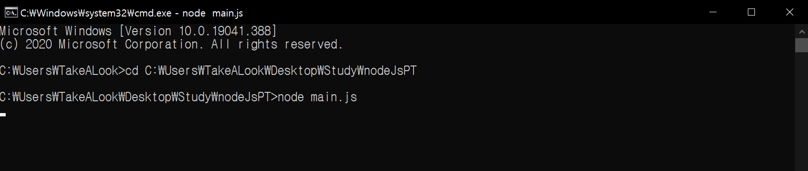
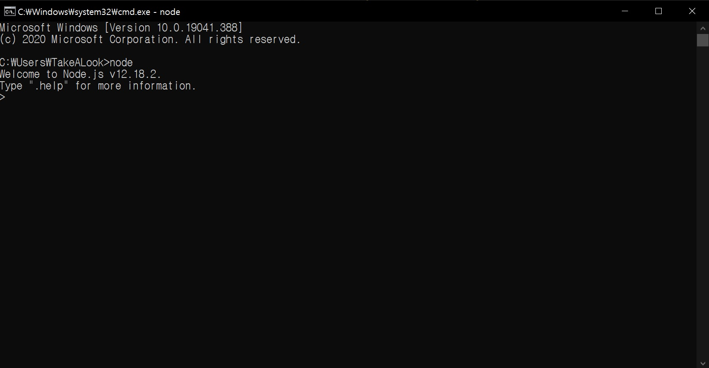
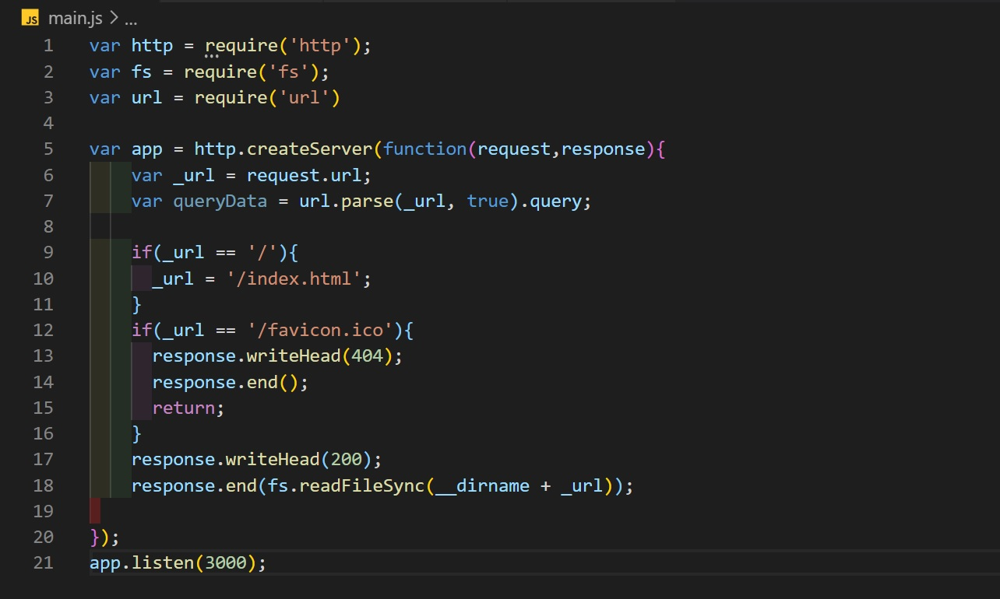
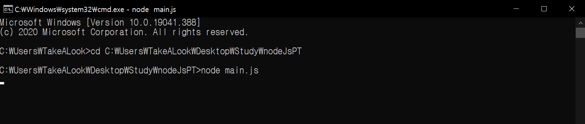

이 상태에서 Enter를 입력하여 디렉토리를 바꾸고 나면, 그 상태에서 'node 파일명.js'를 입력해준다. 오류가 없다면 아래 사진과 같이 나올것이다.

이런 상태가 되면 정상적으로 서버가 구축된 것이며, 인터넷 브라우저 주소창에 'localhost:3000' 이라고 입력하면 자신이 만든 Page가 열리게 된다.
node.js는 WEB 개발 영역중 Backend에 속하는 언어로, 주로 서버에 관련되어 있다. node.js의 기반은 JavaScript이며 모든 문법이 같다.
즉, 브라우저에 귀속되어있던 JavaScript가 외부의 node.js라는 것으로 일반 컴파일 언어와 같이 사용할수있게 되었다. node.js는 기본적으로
OS내에서 콘솔창을 이용해 사용하며 윈도우에서는 cmd를 실행시켜 사용한다 아래의 사진은 예시이다.

위와 같이 콘솔에 'node'라고 입력하면 현재 버전을 알려주며 실행된다. 물론 서버를 구축할 때는 다른 식으로 실행시키지만 이 상태에서 JavaScript로 코딩을 할수있다.
1.Node.JS에서 말했듯이 node.js는 서버구축 및 관리를 위한 언어로 사용한다. 필자도 아직 서버에 대하여 완벽하게 이해한 것이 아니기에 자세한 설명은 못하지만, 우선 예시를 보여주겠다.

위 사진은 필자가 공부할 떄 사용하는 localserver이다. localserver는 외부의 다른 컴퓨터는 접속을 하지 못하는 서버로, 자신의 컴퓨터 내에서만 작동한다고 생각하면 편하다.
외부접속이 가능한 서버를 운영하려면 서버전용 컴퓨터와 domain이 필요하기 때문에 유지비용이 든다. 물론 Google에 검색해보면 무료 Hosting을 해주는 회사들이 꽤 있지만, 보안적으로 또 서버안정화 적으로도 문제가 있기에
되도록이면 가장싼 서버를 사서 쓰거나 연습할때는 localserver를 이용하는 것을 추천한다.
서론이 길었지만 서버를 구축하는 방법을 설명하면, 우선 js파일을 하나 만들어서 위 사진과 같이 코드를 입력한다. 그리고 cmd를 실행시킨다. 서버를 만들 파일의 디렉토리를 복사하여
콘솔에 cd 디렉토리를 입력해준다. 만약 cd를 통해 서버파일이 있는 디렉토리로 이동하지 않으면 작동하지 않는다. 입력을 하게되면 아래와 같다.
이 상태에서 Enter를 입력하여 디렉토리를 바꾸고 나면, 그 상태에서 'node 파일명.js'를 입력해준다. 오류가 없다면 아래 사진과 같이 나올것이다.

이런 상태가 되면 정상적으로 서버가 구축된 것이며, 인터넷 브라우저 주소창에 'localhost:3000' 이라고 입력하면 자신이 만든 Page가 열리게 된다.